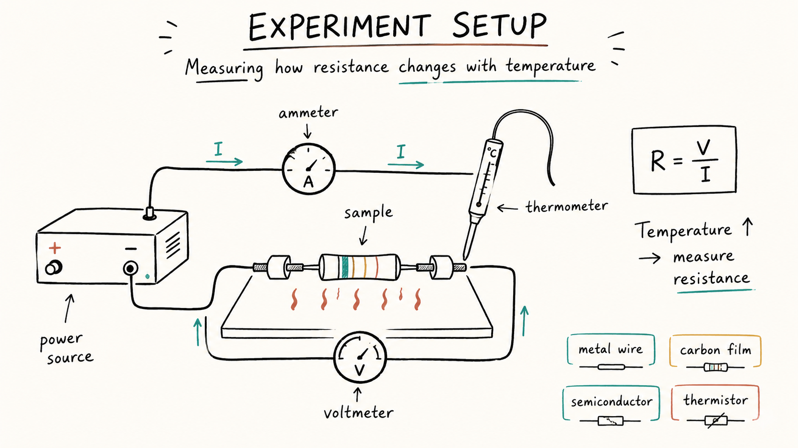
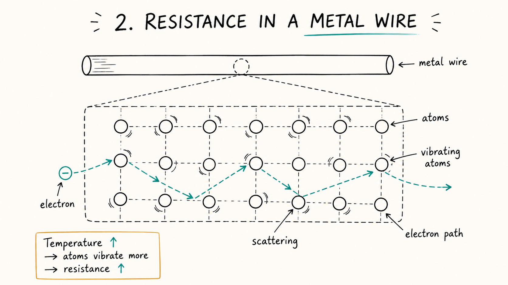
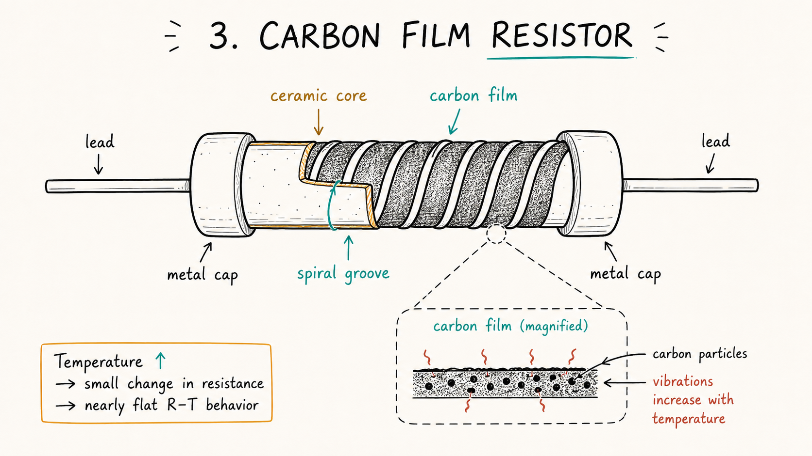
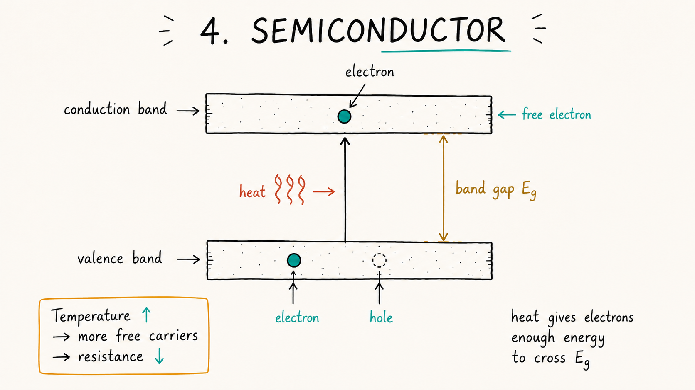
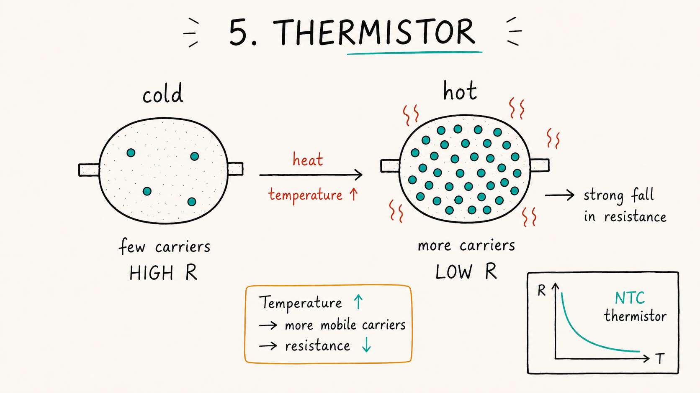
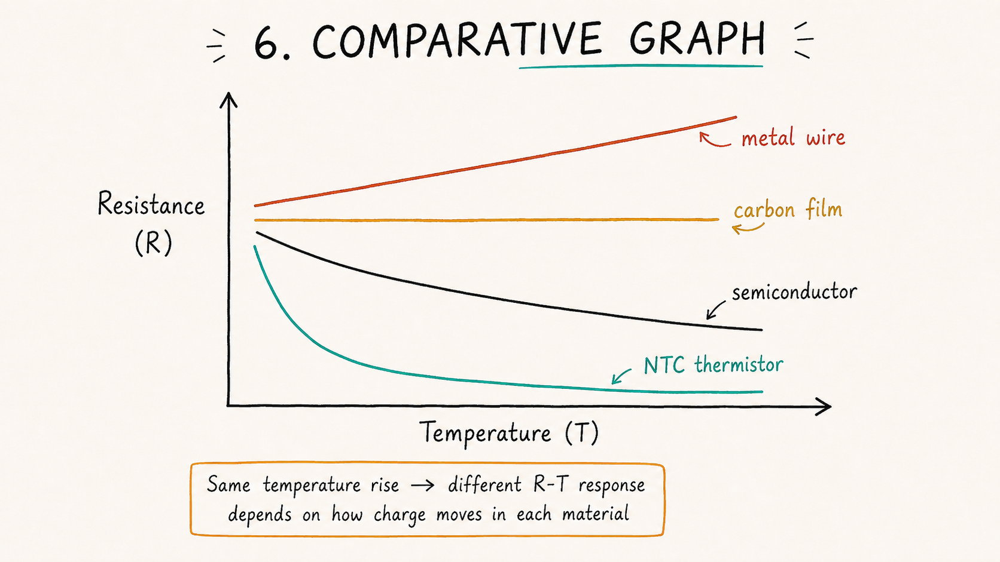
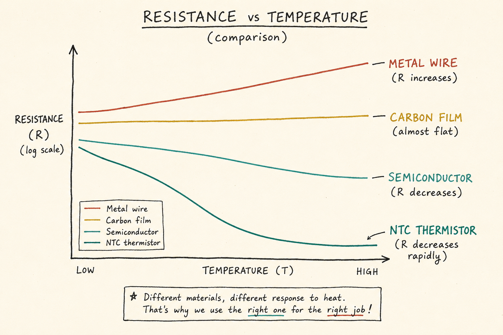
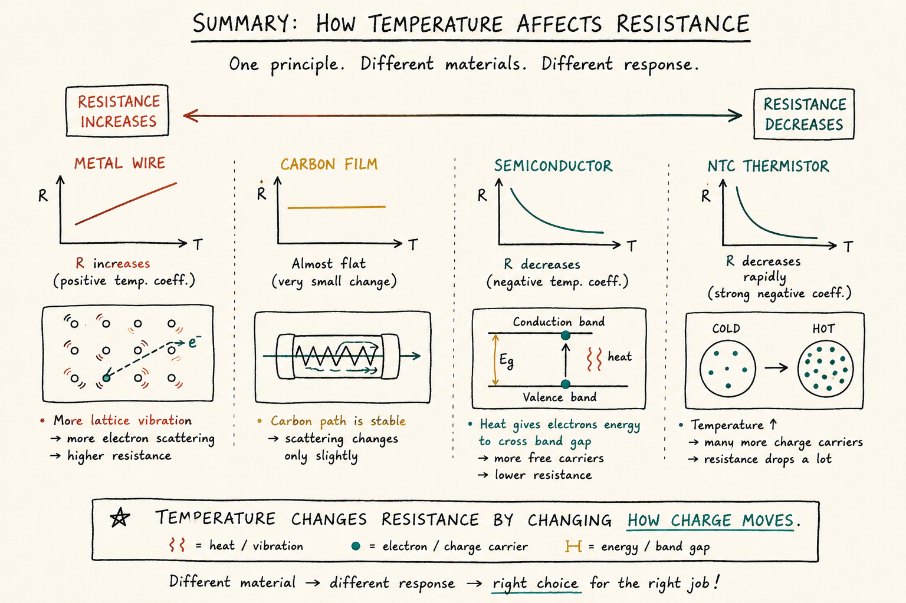

Undergraduate Physics Laboratory
Carbon Film Resistor · Metal Wire · Semiconductor · Thermistor
Why does resistance respond so differently to temperature?

images/slide-1.pngPositive Temperature Coefficient · α > 0

images/slide-2.pngNear-Zero Coefficient · α ≈ 0

images/slide-3.pngNegative Temperature Coefficient · α < 0

images/slide-4.pngExponential Resistance Drop

images/slide-5.png
images/slide-6.png
images/slide-7.png
images/slide-8.png